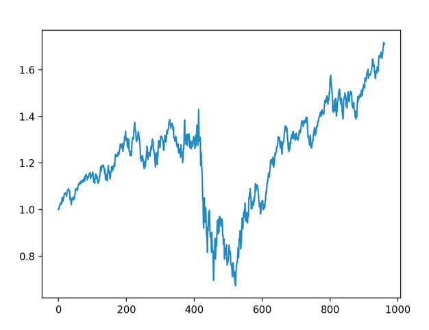

Final Blogpost
In this final blogpost, we present the approaches that we have taken to understand and enhance the Alexandria sentiment analysis as a source of alpha in trading.
The methods that we have employed are descriptive in nature but serve predictive purposes in the trading process. We extracted the amount of search interests for all the stocks that we are interested in and use them as weights. We then extracted the sentiment scores of all the articles for the stocks within our universe over a period of time from 2007-01-01 to 2011-01-01 to generate a weighted sentiment score.
Ultimately, we used a relative-weighted-sentiment trading algorithm on a select number of stocks within the S&P 500 and achieved significant amount of alpha, that is over 8000% cumulative return over the 4-year period of time.
We also conducted an event study on Murphy Oil Corporation to give a more visual and intuitive presentation of the correlation between weighted sentiment score and stock performance.
The weighted sentiment analysis is a powerful tool in devising a trading strategy. Our trading algorithm has shown that the effectiveness of the weighted sentiment score is maximized when we use it to engage in a contrarian investing strategy around the time of financial crisis. Longing the companies receiving negative media attention actually yields higher return and risk adjusted return both before and immediately after the financial crisis. We did not have enough time to investigate the cause of this phenomenon. The ongoing hypothesis is to that too much negative sentiment could attract the attention of contrarian investors thinking that the stocks are undervalued.
This is to say that in general companies with negative sentiment scores and surging media attention tend to outperform on the day after the media attention, but this rule can not be interpreted narrowly that companies with the lowest sentiment scores will outperform companies with higher sentiment scores because our backtesting has indicated that longing the bottom 20% yields better result than longing the bottom 10%.
